上周市场总结
- 美联储未在4月利率会议上加息，符合市场预期。会后美股、美元指数和美国国债收益率齐齐下跌。
- 日本央行则出人意料的未能在货币政策会议上推出新的货币宽松政策。受此影响，日股大跌，日元大涨。受日本以及美国消息面的影响，全球其他主要股指纷纷走低，非美货币集体上涨。而欧元区国债收益率则继续上升
- 商品方面因美国原油库存减少且美元暂不加息，原油和黄金本周携手上攻。
本周投资建议
(2016.05.02-2016.05.08)
- 股市：随着退欧公投反对呼声日益强烈，我们认为英国股市也将摆脱担忧情绪的压制而有所表现。同时，我们看低日本股市并关注美股近期存在调整的风险。
- 汇市：我们仍然看多日元,英镑以及欧元。
- 商品：需要关注油价逼近50美元关口所带来的短期回调风险。随着市场波动上升，美元加息暂缓，均使得黄金趋强。
- 债券：欧元区国债在连续下跌后可能会因市场波动加大而重新吸引资金关注。
一周要闻回顾
中国：
- 周日公布的4月官方PMI为50.1，连续两个月高于枯荣线50。但不及预期50.3以及前值50.2。表明经济虽短期回暖，但增长前景仍有很大压力。
美国：
- 美联储毫无意外的在FOMC4月利率会议上维持现有利率不变，会议声明删除了上次声明中的“全球经济和金融状况的发展仍然带来风险”措辞，并指出美国经济喜忧参半:劳动力市场持续改善但经济活动增长似乎有所放缓，且通胀持续低于FOMC2%的长期目标水平。由声明可以看出，目前美联储的加息决策聚焦于美国国内的经济增长和通胀情况，需对这两类指标保持密切关注。
- 而本周公布的美国经济指标似乎在印证美联储的观点: 首先，在经济增长方面，一季度实际GDP年化季环比初值为0.5%，低于市场预期的0.7%，而相较于去年四季度的1.4%则更显增长疲软。而3月新屋销售数据也弱于预期以及前值。其次，作为美联储长期通胀观察目标的核心PCE物价指数年率在3月录得同比1.6%，符合预期但低于1月以及2月前值1.7%。而4月谘商会消费者信心指数为94.2，低于预期95.8以及前值96.2。以上数据显示美国通胀以及消费增长缓慢。另一方面，本周公布的首次以及续请失业救济人数均好于预期，支持了美联储关于就业市场持续向好的观点。
- 本周三公布的当周EIA原油库存数据显示库存增加199万桶，多于预期的增加150万桶。但当周API原油库存数据则显示库存意外减少107.6万桶，前值为增加310万桶。受此消息刺激，原油周内大涨。
欧洲及其它发达国家：
1.欧元区
- 总体而言，本周公布的经济指标显示欧元区主要国家经济温和复苏。但与美国类似，欧元区经济体在就业市场好转的情况下，通胀以及消费仍然不尽如人意，这也给当前脆弱的经济增长前景蒙上了一层阴影。
- 欧元区3月失业率为10.2%，而预期以及前值均为10.3%，显示就业持续好转。而一季度GDP则同比增加1.6%，环比增加0.6%，均好于预期的1.4%以及0.4%。
- 德国方面，4月失业人士减少16000人显示就业市场好转。但在通胀方面，4月CPI环比-0.2%与预期持平，同比-0.1%低于预期的0.1%。3月零售销售同比以及环比数据也大幅弱于预期。显示通胀以及消费依然低迷，亦表明经济增长仍有隐忧。
- 法国一季度GDP同比初值1.3%，环比初值0.5%，预期为1%和0.4%，显示经济温和增长。
- 意大利3月失业率为11.4%好于预期的11.6%以及前值11.7%。但CPI数据不及预期。
2.英国
- 虽然六月退欧公投的不确定性始终笼罩在英伦三岛，但按照公布的经济数据来看英国经济运行良好。一季度GDP同比初值增加2.1%好于预期值2%，和前值持平，环比则增加0.4%符合预期，显示英国经济持续增长。3月央行抵押贷款为74亿英镑，消费信贷为19亿英镑，大幅好于预期的37亿英镑以及13亿英镑，显示英国房产与消费市场强劲。目前唯一拖累英镑以及英国股市上涨的因素只剩退欧公投。
3.日本
- 在周四闭幕的货币政策会议上，出乎所有人的意料，日本央行决定按兵不动，没有采取任何新的货币宽松政策。市场之前热切期待的扩大购买日股ETF基金的政策并未能推出。且日本央行在约一年时间内第四次推迟通胀目标实现时间，将实现2%通胀目标的时间推后至2017财年内，表明其本身对通胀上升亦缺乏信心。受此影响，周内日元大幅上扬而日股大跌，美元/日元涨破107日元关口。
- 经济数据方面，从本周公布的数据来看，就业形势稳定，工业产出也显示经济有回暖现象，但通胀和消费不尽如人意。日本3月失业率为3.2%，前值与预期均为3.3.%。3月工业产出同比以及环比均优于预期以及前值。但3月全国CPI同比为-0.1%，弱于预期的0.0%以及前值0.3%。而3月所有家庭支出同比更是减少5.3%，明显差于预期的减少4.1%以及前值增加1.2%。。
具体经济指标发布信息请参阅:“重要经济指标公布信息(2016)”
一周市场回顾
全球股票市场
综述: 受到日本央行意外维持货币政策不变，以及美国通胀和经济增长类数据疲软的影响，上周全球股市跌声一片。日股和欧洲股市结束了连续两周的涨势，其中日经225更是因为日本央行未能如市场预期般推出扩大购买日股ETF基金的政策而大跌过5%。美股则继续上周跌势，显示近期可能存在阶段性调整风险。而受到近期原油及其他大宗商品价格反弹的影响，新兴市场股市表现总体优于各发达经济体股市。
- 道琼斯全球市场指数上周报收于2377.16，前一周收盘2396.48，本周开盘2382.89，一周下跌0.81%。周内高点2409.17，涨幅0.53%。周内低点2368.29，跌幅1.18%。 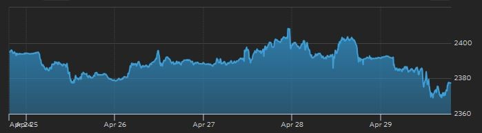
- 美国S&P 500上周报收于2065.30，前一周收盘2091.58，本周开盘2089.37，一周下跌1.26%。周内高点2099.89，涨幅0.4%。周内低点2052.28，跌幅1.88%。 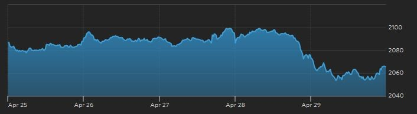
- 德国DAX上周报收于最低点10038.97，前一周收盘10373.49，本周开盘2050.23，一周下跌3.22%。周内高点10399.30，涨幅0.25%。 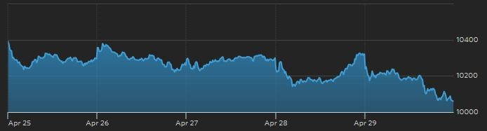
- 英国富时100上周报收于6241.89，前一周收盘6310.44，本周开盘6310.44，一周下跌1.09%。周内高点6324.60，涨幅0.22%。周内低点6224.47，跌幅1.36%。 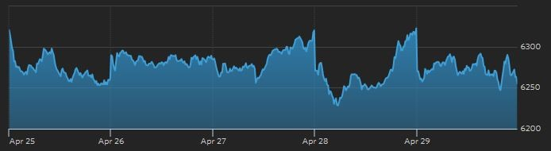
- 欧洲Stoxx EU600指数上周报收于341.48，前一周收盘348.46，本周开盘348.52，一周下跌2%。 周内高点349.33，涨幅0.25%。周内低点341.41，跌幅2.02%。 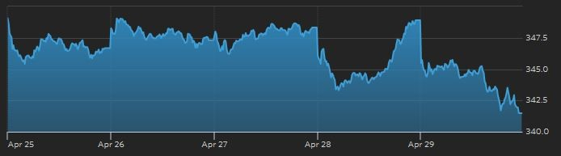
- 日经225上周四（周五休市）收于16666.05，前一周收盘17572.49，本周开盘17613.56，一周大跌5.16%。周内高点17613.56，涨幅0.23%。周内低点16652.74，跌幅5.23%。 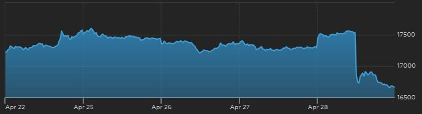
- 香港恒生指数上周报收于21067.05，前一周收盘21467.04，本周开盘21408.56，一周下跌1.86%。周内高点21654.07，涨幅0.87%。周内低点21023.77，跌幅2.06%。 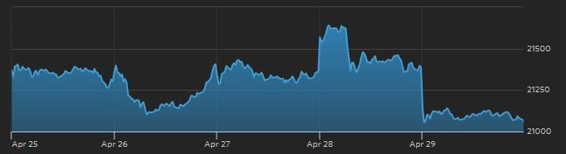
- 道琼斯新兴市场指数上周报收于3472.14，前一周收盘3487.52，本周开盘3461.71，一周下跌0.44%。周内高点3494.46，涨幅0.20%。周内低点3461.23，跌幅0.75%。 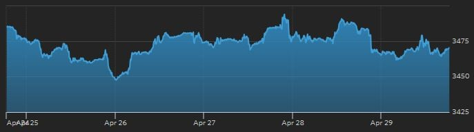
全球外汇市场
综述: 上周美联储4月利率会议决定暂缓加息使得美元指数一路走低。包括欧元以及英镑在内，各主要非美货币纷纷上涨。而日本央行未在货币政策会议推出新的宽松措施使得市场预期落空，日元在周四会后一路走高，美元/日元轻松击破108,107日元两个关口。人民币则受到以上因素提振，上周小幅上升。澳元则因为前期连续上涨，本周小幅回落。
- 美元：美元指数周内一路走低，最终报收93.08，较前一周收盘价95.12，下跌2.14%。 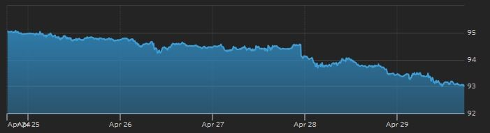
- 人民币：周内受到日元升值以及美元指数走低的提振，在岸人民币上周收盘上涨0.50%，报收于6.4741。离岸人民币则收于6.4869，涨幅0.30%。 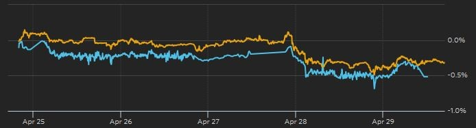
- 欧元：上周收盘价1.1449，较前一周收盘价1.1226，一周上涨1.99%。 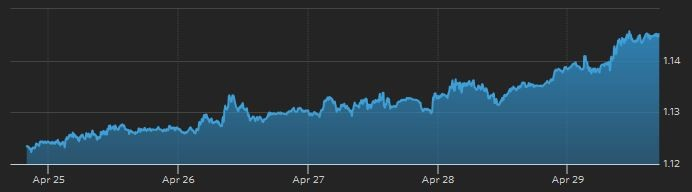
- 英镑：上周收盘价1.4611，较前一周收盘价1.4401，一周上涨1.46%。 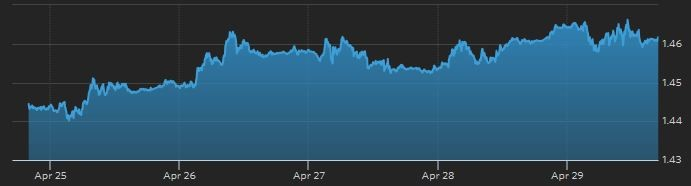
- 日元：在周四日本央行货币政策会议结束后日元快速走高，美元/日元在两个交易日内 连续突破108及107日元两个关口，最终周收盘为106.50日元，日元较前一周大涨4.72%。 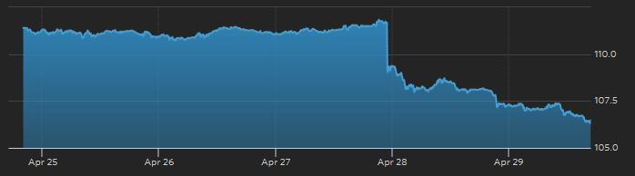
- 澳元：上周小幅走低，最终报收于0.7608，较前一周收盘价0.7709回落1.31%。

全球商品能源市场
综述: 上周市场因日本央行出人意料的未推出新的宽松政策，外加美国及欧元区的通胀及消费数据疲软，市场对全球经济前景的担忧情绪有所回温。市场并预期短期内因受困于通胀低迷，美联储无法加息，黄金因而结束前两周的回落盘整走势，周内价格一路走高。原油则受到当周美国API原油库存下降的提振，维持之前的强势上涨，周收盘涨幅过5%。
- 原油：NYMEX六月到期原油期货CLM6电子盘上周报收于每桶45.92美元，大涨5.01%，周五盘中曾一度突破46美元大关。 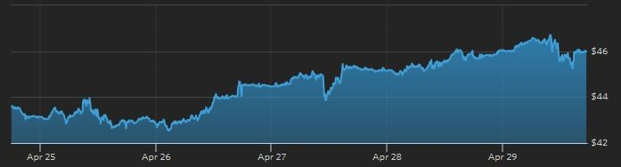
- 黄金：COMEX六月到期黄金期货GCM6电子盘上周一路走高，最终报收于每盎司1290.50美元，一扫前两周的跌势，大涨4.92%。周五盘中更触及1299美元的高位，逼近1300美元的整数关口。 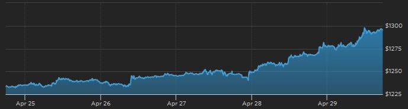
- 路透CRB商品研究局指数：一周上涨2.76%，收于184.61，前一周收盘价179.65。 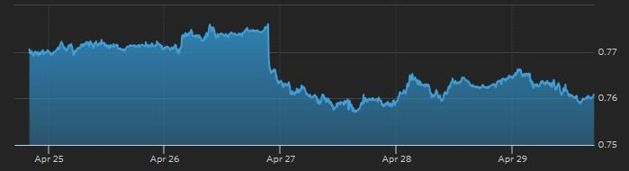
全球债券市场
综述: 因应美国低迷的通胀数据，市场预期美联储近期很难加息。受此影响，美国10年期国债收益率本周一改前两周大幅上扬的态势，本周下跌近3%。而因为对日本央行按兵不动的举措感到失望，投资者对日本市场暂时采取抽离态度，日本10年期国债收益率因而暴涨。另一个方面，德国等欧元区国家10年期国债收益率则继续两周来的上涨趋势，但涨势趋缓，显示在国债收益率上行，国债价格连续下跌的情况下，其投资机会已经显现。英国10年期国债收益率则继续受益于市场对退欧公投的担忧情绪而小幅上涨。
- 美国：上周美国 10年期国债收益率报收1.834，较前一周收盘价1.889下跌2.91%。 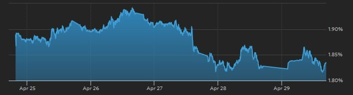
- 德国：10年期国债收益率上周收盘0.272，较前一周收盘价0.234上涨16.24%。 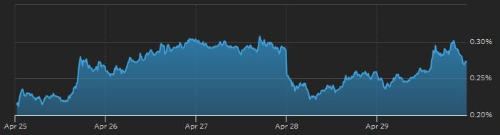
- 英国：10年期国债收益率上周收盘1.600，较前一周收盘价1.602微幅下跌0.12%。 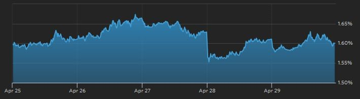
- 日本：10年期国债收益率上周收盘-0.083，较前一周收盘价-0.125暴涨33.60%。 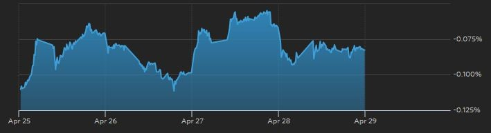
本周重大事件
| 日期 | 重大事件 | 时间(北京) |
| 5/2 | (法国)4月制造业PMI终值 | 15:50 |
| 5/2 | (德国)4月制造业PMI终值 | 15:55 |
| 5/2 | (欧元区)4月制造业PMI终值 | 16:00 |
| 5/2 | (美国)4月ISM制造业指数 | 22:00 |
| 5/3 | (中国)4月财新制造业PMI | 09:45 |
| 5/3 | (澳大利亚)澳联储公布利率决议 | 12:30 |
| 5/3 | (英国)4月制造业PMI终值 | 16:30 |
| 5/4 | (美国)当周API原油库存 | 04:30 |
| 5/4 | (美国)4月ADP就业人数变动 | 20:15 |
| 5/4 | (美国)3月贸易帐 | 20:30 |
| 5/4 | (美国)3月工厂订单环比 | 22:00 |
| 5/4 | (美国)3月耐用品订单环比终值 | 22:00 |
| 5/4 | (美国)4月ISM非制造业指数 | 22:00 |
| 5/4 | (美国)当周EIA原油库存 | 22:30 |
| 5/5 | (澳大利亚)3月商品及服务贸易帐 | 09:30 |
| 5/5 | (澳大利亚)3月零售销售环比 | 09:30 |
| 5/5 | (美国)当周首次申请及续请失业救济金人数 | 20:30 |
| 5/5 | (日本)3月全国/东京CPI数据 | 07:30 |
| 5/5 | (美国)FOMC票委圣路易斯联储主席发表讲话 | 23:00 |
| 5/6 | (美国)4月失业率 | 20:30 |
| 5/6 | (美国)4月非农就业人口变动 | 20:30 |